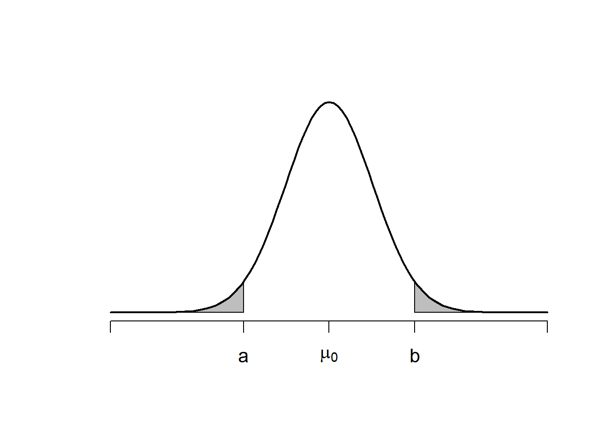

5 Testes de hipóteses
5.1 Definição de hipóteses, testes e modos de avaliação
Existem diversos problemas nos quais o objetivo da inferência é levantar evidências de alguma suposição sobre a população \(F(.)\). Tais suposições são denominadas hipóteses.
Definição. Qualquer suposição sobre \(F(.)\) é denominada
Exemplo. Seja \(X_1,\ldots,X_n\) uma amostra de variáveis aleatórias. Ao menos que existam razões físicas claras, considerar que estas variáveis são independentes e identicamente distribuídas é uma hipótese.
Podem existir diferentes hipóteses para o mesmo problema. É comum identificar a \(i\)-ésima hipótese por \(H_i\), com \(i=0,1,2,\ldots\). Seguem alguns exemplos:
- \(H_1:\theta=0\).
- \(H_2:\theta>0\).
- \(H_3:\) \(X_1,\ldots,X_n\sim\hbox{Normal}(\mu,\sigma^2)\) para algum par \((\mu,\sigma^2)\) desconhecido.
- \(H_4:\) \(X_1,\ldots,X_n\) é uma amostra de variáveis aleatórias independentes.
- \(H_5:\) \(X_1,\ldots,X_n\) é uma amostra de variáveis aleatórias independentes com distribuição normal.
Nesse curso, será discutida apenas a abordagem paramétrica. Sob essa ótica, hipóteses são suposições sobre os parâmetros da população, o que implica em hipóteses do tipo \[H_i:\theta\in \Theta_I\subset\Theta.\] Nesta abordagem, existem dois tipos importantes de hipóteses: * Hipóteses simples: são do tipo \(H:\theta=\theta_0\). Exemplos: \(H_0:\theta=\theta_0\); \(H_1:\{\alpha=\alpha_0\}\cap\{\beta=\beta_0\}\). Uma hipótese simples identifica completamente a população. * Hipóteses compostas: são do tipo \(H:\theta\in \Theta'\subset \Theta\). Exemplos: \(H_0:\theta\leq \theta_0\); \(H_1:\{\alpha\leq\alpha_0\}\cup\{\beta\geq\beta_0\}\). Observe que essas hipóteses trazem muitas possibilidades para o valor de \(\theta\), tornando impossível determinar completamente a população.
Os testes de hipóteses são procedimentos que utilizam uma amostra para decidir se certa hipótese é verdadeira ou falsa. Ao considerar uma certa hipótese \(H_0:\theta\in\Theta_0\), onde \(\Theta_0\subset \Theta\), após observar os dados existem duas decisões: * Decisão 1: aceitar a hipótese \(H_0\) como verdadeira. * Decisão 2: aceitar a hipótese \(H_0\) como falsa. Note que estas decisões são estatísticas, uma vez que elas são baseadas na amostra.
Teste de Hipóteses. Um teste de hipóteses (também chamado de regra de decisão) é qualquer estatística \(D:\mathcal{X}^n\rightarrow \{0,1\}\). Se \(D(\textbf{x})=1\), toma-se a decisão de rejeitar \(H_0\) e se \(D(\textbf{x})=0\), toma-se a decisão de não rejeitar \(H_0\).
Para racionalizar o processo de decisão, seja
\[\delta=\left\{\begin{array}{ll}1,& \hbox{ se $H_0$ é falsa }\\ 0,&\hbox{ se $H_0$ é verdadeira}\end{array}\right.\] Observe que o teste \(D\) pode ser considerado um estimador para \(\delta\). Deste modo, a qualidade do teste \(D\) pode ser verificada através do erro quadrático médio:
\[\begin{align}EQM_{D}(\delta)&=E(D-\delta)^2=\delta^2P(D=0|\delta)+(1-\delta)^2P(D=1|\delta)\\ &= \delta^2(1-P(D=1|\delta))+(1-\delta)^2 P(D=1|\delta)\\ &=\delta^2+[-\delta^2+(1-\delta)^2]P(D=1|\delta)\\ &=\delta^2+[1-2\delta]P(D=1|\delta)\end{align}\]
Observe que o erro quadrático médio depende de \(P(D=1|\delta)\), que por sua vez só é conhecido quando \(\delta\) é conhecido. Ao ver essa probabilidade como função de \(\delta\), temos a função poder do teste (posteriormente definiremos apropriadamente essa função).
Considere os seguintes cenários:
- Se \(\delta=0\) (a hipótese é verdadeira), teremos
\[EQM_D(0)=P(D=1|\delta=0)\] e quanto menor o valor do poder do teste, menor é o erro quadrático médio. É imediato que essa probabilidade se refere à ação de rejeitar, erroneamente, a hipótese \(H_0\) quando ela é verdadeira. Esse erro é denominado erro do tipo I.
- Se \(\delta=1\) ( a hipótese é falsa), então \[EQM_D(1)=1-P(D=1|\delta=1),\] e, nesse caso, quanto maior o valor do poder do teste, menor é o erro quadrático médio. Obviamente, \(1-P(D=1|\delta=1)=P(D=0|\delta=1)\). Portanto, o erro quadrático médio é definido como a probabilidade de não rejeitar (erroneamente) a hipótese \(H_0\) quando ela é falsa. Esse erro é denominado erro do tipo II.
Importante! Os erros do tipo I e II não são complementares, uma vez que o primeiro é calculado sob \(\delta=0\) e o segundo sob \(\delta=1\). Contudo, há uma relação importante entre eles, ilustrada nos cenários abaixo:
Suponha que o teste \(D\) nunca comete o erro do tipo I. Então \(P(D=1|\delta=0)=0\). Isso só pode acontecer se a decisão \(D=1\) nunca for realizada. Logo, quando \(\delta=1\), \[1-P(D=1|\delta=1)=P(D=0|\delta=1)=1\] e o erro do tipo II será cometido com probabilidade 1.
Alternativamente, suponha que o teste \(D\) nunca comete o erro do tipo II. Então \(P(D=0|\delta=1)=0\). Isso só pode acontecer se a decisão \(D=0\) nunca for realizada. Logo, quando \(\delta=0\), \[0=P(D=0|\delta=0)=1-P(D=1|\delta=0)\Rightarrow P(D=1|\delta=0)=1\] e o erro do tipo I será cometido com probabilidade 1.
Observe que não é possível eliminar a ocorrência de um dos erros (tipo I ou II) sem correr o risco de sempre cometer o outro erro. Para ter algum controle sobre o problema, escolhemos a probabilidade de cometer o erro tipo I para ficar controlada. Tal probabilidade é denominada nível de significância.
Definição Dizemos que o teste \(D\) tem nível de significância \(\alpha\) se a probabilidade de cometer o erro do tipo I é menor ou igual à \(\alpha\).
Uma vez que decidimos controlar o erro do tipo I, mantendo o nível de significância em \(\alpha\), sabemos que nosso teste \(D\) vai cometer o erro de rejeitar \(H_0\) com probabilidade \(\alpha\) sempre que \(H_0\) for verdadeira. Como apenas esse cenário está controlado, é comum formular a hipótese \(H_0\) como algo que deve ser rejeitado (daí vem o termo “hipótese nula” para ser referir à \(H_0\)).
Exemplo. Dizemos que certa máquina está desregulada se sua probabilidade (\(\theta\)) de produzir itens defeituosos é maior que \(0,001\). Um lote de peças produzidos por essa máquina é separado e cada peça é testada. O objetivo é saber se a máquina está regulada, ou seja, se a atual probabilidade é menor que \(0,001\). Recorde que é usual definir a hipótese nula como o complementar do que queremos testar, o que gera \[H_0:\theta\geq 0,001\;\; (\hbox{ máquina desregulada})\]
Vejamos os riscos envolvidos nesse processo de decisão:
Erro tipo I: dizemos que a máquina está operando normalmente, quando na verdade ela está desregulada. Os lotes serão vendidos, os clientes serão prejudicados, a marca vai perder credibilidade, pode ser necessário fazer o recall dos lotes produzidos.
Erro tipo II: dizemos que a máquina está desregulada, quando na verdade ela está operando normalmente. A linha de produção deve ser interrompida e a equipe técnica tem que avaliar a máquina. O problema se resolve dentro da própria empresa.
Para testar essa hipóte, escolhemos um teste \(D\) com nível de significância de 1%. Ao observar a amostra, duas coisas podem acontecer:
\(D(\textbf{x})=1\). Nesse caso, assumimos que a máquina está operando normalmente. Tomamos essa decisão porque a probabilidade do teste errar nessa situação é de 1%
\(D(\textbf{x})=0\). Nesse caso, assumimos que a máquina está desregulada. A probabilidade do erro tipo II em geral é maior que o nível de significância (no nosso caso 1%). Ainda sim, cometer esse erro implica em acionar a equipe técnica para uma avaliação, algo muito menos problemático que o erro do tipo I.
Importante! Embora \(D(x)=0\) seja a decisão de aceitar \(H_0\) como verdadeira, alguns textos utilizam termos como “não há evidências para rejeitar \(H_0\)”, ou “o teste falhou em rejeitar \(H_0\)”. O motivo por trás desses termos está o fato de que o erro tipo II não está controlado, logo, não sabemos com que frequência a decisão de aceitar a hipótese vai estar equivocada.
5.2 A construção de um teste de hipóteses a partir de uma estatística de teste
Para construir um teste de hipóteses, é preciso particionar o espaço amostral de duas regiões:
Região de rejeição: são todas as amostras que levam à decisão de rejeitar a hipótese nula.
Região de aceitação: são todas as amostras que levam à decisão de aceitar a hipótese nula.
Pode ser uma tarefa árdua descobrir como particionar o espaço amostral de maneira adequada para obter um teste de hipóteses. Conforme já discutido no Capítulo 3, podemos utilizar uma estatística \(T\) para reduzir a dimensão do problema. Uma vez que o teste \(D\) e a estatística \(T\) são funções da amostra, podemos definir um teste com a composição \(D(T(\textbf{x}))\). Quando utilizada dessa forma, \(T\) é denominada estatística de teste. A figura abaixo ilustra esse conceito.
Em geral, escolhemos uma estatística de teste que possui alguma relação com \(\theta\) (como, por exemplo, uma estatística suficiente ou um estimador). Tal opção é útil para definir como a partição será feita. Para ilustrar, considere que \(T\) é um estimador para \(\theta\) e suponha que desejamos testar se \(H_0:\theta\in \Theta_0\). É natural pensar que \(H_0\) é falsa se \(t\) observado está longe da região \(\Theta_0\). Deste modo, podemos definir um valor \(c>\theta_0\) e construir a região de rejeição \[R=\{t:t>c\}.\] Deste modo, criamos o teste \[D(t)=\left\{\begin{array}{ll}1,&t>c\\0,&t\leq c\end{array}\right.\] Para determinar o valor de \(c\), podemos fixar o nível de significância. Deste modo, teremos que \[\alpha=P(D=1|\theta_0)=P(T>c|\theta_0)=1-F_{T|\theta_0}(c)\Rightarrow F_{T|\theta_0}(c)=1-\alpha.\] Portanto, \(c\) é o quantil \(1-\alpha\) da distribuição de \(T\) supondo que \(\theta=\theta_0\).
Exemplo. Seja \(X_1,\ldots,X_n\) uma amostra aleatória da população Normal(\(\mu\),1). Considere a hipótese nula \(H_0:\mu \leq \mu_0\).
Sabemos que \(\bar{X}_n\) é um estimador para \(\mu\). Vamos ter evidências para rejeitar \(H_0\) quando \[\bar{x}_n>c>\mu_0.\]. Para determinar o valor de \(c\), fixe o nível de significância \(\alpha\). Então
\[\alpha=P(\bar{X}_n>c|\mu_0)=1-P(\bar{X}_n\leq c|\mu_0)\Rightarrow F_{\bar{X}_n|\mu_0}(c)=1-\alpha.\] Portanto, \(c\) é o quantil \(1-\alpha\) de de \(\bar{X}_n|\mu_0\sim N(\mu_0,1/n)\). Os exemplos
Exemplo. Um agricultor afirma que a média de produção de soja em sua fazenda maior que 3 toneladas por hectare. Uma amostra de 15 hectares foi selecionada e a produção de soja média foi de 3,2 toneladas. Supondo que a produção média de soja por hectare tem distribuição normal com desvio padrão de 0,5 tonelada por hectare, teste, ao nível de 5% de significância, a afirmação do agricultor.
Solução. Queremos saber se \(\mu>3\). Portanto, a hipótese nula é \[H_0:\mu\leq 3.\] Vamos utilizar o estimador \(\bar{x}_{15}\). A figura abaixo aprenta várias possibilidade para a distribuição de \(\bar{X}_{15}\) quando \(H_0\) é verdadeira, sendo que a curva mais à direita corresponde à distribuição normal com média \(\mu=3\). Os pontos verdes representam valores que podem ocorrer quando a hipótese nula é verdadeira. Já os pontos vermelhos ocorrem com uma probabilidade muito baixa quando \(H_0\) é verdadeira. Nosso objetivo é encontrar o ponto \(c\) que vai particionar os valores de \(\bar{x}_{15}\), criando as regiões de rejeição e aceitação.
As funções densidade acima são apenas algumas das infinitas possibilidades de distribuição para \(\bar{X}_{15}\) quando \(H_0:\mu\leq 3\).
ObserveOVamos rejeitar a hipótese nula se houverem evidências de que \(\mu\) é maior que 3.
Utilizando \(\bar{x}_{15}\) para tomar a decisão, teremos a seguinte região de rejeição: \[R=\{\bar{x}_{15}:\bar{x}_{15}>c\}.\] Para determinar o valor de \(c\), observe que \[0,05=P(\bar{X}_{15}>c|\mu=3)=1-P(\bar{X}_{15}\leq c|\mu=3)\Rightarrow F_{\bar{X}_{15}|\mu=3}(c)=0,95\] logo \(c\) é o quantil de 95% da distribuição \[\bar{X}_{15}|\mu=3\sim N\left(3,\frac{0,5^2}{15}\right)=N\left(3,\frac{1}{60}\right)\] O valor de \(c=3,212\). Portanto, rejeitamos \(H_0\) quando \(\bar{x}_{15}>3,212\). Como \(\bar{x}_{15}=3,2\), não rejeitamos a hipótese nula.
Exemplo. O número de chamadas em um call center possui distribuição Poisson com taxa 120 chamadas. Após a implementação de uma nova campanha de marketing, a empresa deseja verificar se a taxa média de chamadas aumentou. Para isso, foi coletada uma nova amostra de dados, correspondente a 100 horas de atendimento, resultando em uma média de 135 chamadas por hora. Teste, ao nível de significância de 5%, se a nova campanha teve efeito.
Solução. Deseja-se saber se houve aumento na taxa de chamadas, ou seja, se \(\theta>120\). Portanto, a hipótese nula pode ser formulada como \(H_0:\theta\leq 120\).
Considerando o estimador de máxima verossimilhança como estatística de teste, rejeitamos a hipótese nula quando \(\hat{\theta}>c\), com \(c>120\). Fixando o nível de significância em 5%, teremos que \[0,05=P(\hat{\theta}>c|\theta=120)=1-P(\hat{\theta}\leq c|\theta=120)\] e, como \[P(\hat{\theta}\leq c|\theta)=P\left(\sum_{i=1}^{100}X_i\leq 100c|\theta=120\right)=F_T(100c),\] onde \(T\sim\hbox{Poisson}(12000)\). Unindo as duas equações acima, concluímos que, \[F_T(100c)=0,95\] ou seja \(100c\) é o quantil 95% da distribuição Poisson(12000). Abaixo apresentamos o cálculo de \(c\) no R:
c = qpois(.95,12000)/100
c[1] 121.8Portanto, a região de rejeição desse teste é \[R=\{\hat{\theta}:\hat{\theta}>121,8\}.\] Como o valor observado de \(\hat{\theta}\) é \(135\), rejeitamos a hipótese nula. Portanto, há evidências de que a campanha teve efeito.
Exemplo. Uma fábrica de lâmpadas precisa manter a proporção de peças defeituosas no máximo em 2%. Regularmente, uma equipe de controle de qualidade seleciona aleatoriamente uma amostra de 500 lâmpadas para testar essa hipótese. Em determinado dia, foram encontras 15 lâmpadas com defeito. Verifique se há evidências de que a afirmação da fábrica é verdadeira, ao nível de 5% de significância.
Solução. Precisamos determinar qual dos seguintes erros é o pior:
Dizer que a proporção de produção de peças é menor que 2%, quando na verdade é maior.
Dizer que a proporção de produção de peças é maior que 2%, quando na verdade é menor.
O primeiro erro implica em problemas com clientes e propaganda negativa da marca. Já o segundo implica apenas no trabalho de rotina do controle de qualidade. Vamos considerar o primeiro como o erro do tipo I. Sendo \(\theta\) a probabilidade de produzir uma lâmpada defeituosa, queremos testar \[H_0:\theta\leq 0,02.\]
Temos uma amostra de 500 variáveis com distribuição Bernoulli, onde \(X_i=1\) se a lâmpada \(i\) for defeituosa. Observe que vamos ter evidências contra \(H_0\) quando \(\hat{\theta}\) for maior que 0,02
A estimativa para \(\theta\) encontrada foi \[\hat{\theta}_{500}=\sum_{i=1}^{500}\frac{x_i}{500}=\frac{15}{500}=0,03\]
Vamos rejeitar
Enunciado:
Com base nessa amostra, podemos afirmar, com 95% de confiança, que a taxa de defeitos da fábrica é superior a 2%?
5.3 O teste da razão de verossimilhanças
Considere a \(H_0:\theta\in\Theta_0\subset \Theta\). Seja \(\hat{\theta}_0\), o valor em \(\Theta_0\) tal que \[\begin{equation} L(\theta)\leq L(\hat{\theta}_0), \end{equation}\]
para todo \(\theta\in\Theta_0\). O valor \(\hat{\theta}_0\) pode ser interpretado como sendo a estimativa de máxima verossimilhança de \(\theta\) quando a hipótese \(H_0\) é verdadeira.
Agora, seja \(\hat{\theta}\) o EMV para \(\theta\). Se \(L(\hat{\theta}_0)\) estiver próximo do valor de \(L(\hat{\theta})\), então o valor mais verossímil de \(\Theta_0\) está próximo do valor mais verossímil de \(\Theta\), dando evidências de que \(H_0\) é verdadeira. Portanto, valores pequenos da estatística \[\begin{align} \lambda(\textbf{X})=\frac{L(\hat{\theta}_0)}{L(\hat{\theta})}, \end{align}\] dão evidências de que \(H_0\) é falsa.
A região cinza corresponde ao conjunto da hipótese nula. No gráfico da esquerda, o ponto mais verossímil da hipótese nula está afastado da estimativa de máxima verossimilhança, levando à rejeição de \(H_0\). Já no gráfico seguinte, a estimativa de máxima verossimilhança está dentro do conjunto da hipótese nula e, portanto, não hà motivos para rejeitá-la.
Definição Considere a hipótese \(H_0:\theta\in\Theta_0\subset \Theta\). O teste para esta hipótese que utiliza a estatística \[\lambda(\textbf{X})=\frac{L(\hat{\theta}_0)}{\hat{\theta}}\] com região de rejeição dada por \[R=\{ \lambda(\textbf{x}): \lambda(\textbf{x})\leq k \}\] para algum valor de \(0<k<1\) fixado é denominado Teste da Razão de Verossimilhanças (TRV). \end{defi}
Em geral, o valor de \(k\) da região de rejeição dada na Definição \(\ref{defi::TRV}\) é escolhido de modo a satisfazer \[\alpha\geq P(\lambda({\bm{X}})<k|\theta),\;\;\forall \theta\in\Theta_0\] para o nível de significância \(\alpha\) fixado.
{